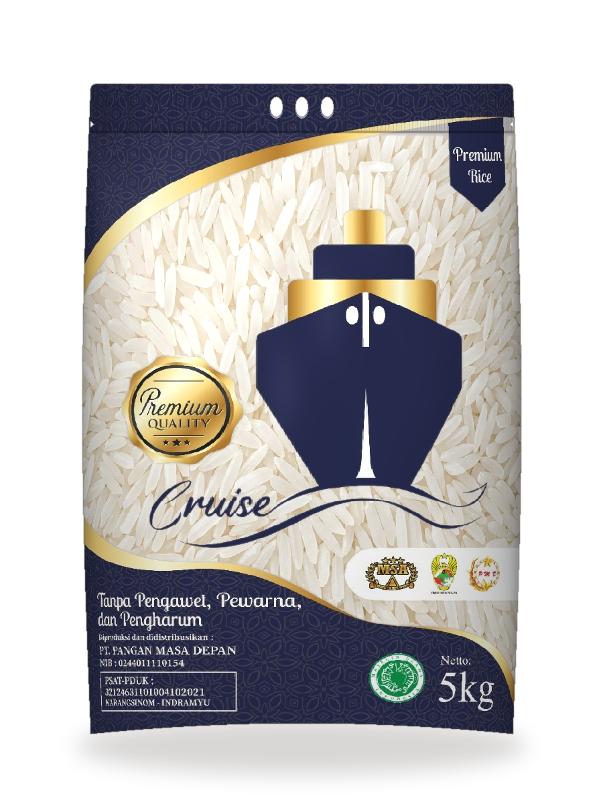

Beras Cruise
Premium Quality Rice • Kemasan 5 Kg- •Bulir putih bening utuh dengan derajat sosoh optimal 95%
- •Tekstur nasi sangat pulen, wangi, dan lembut alami
- •Bebas dari bahan pengawet, pewarna, & pengharum sintetis
- •Pilihan utama untuk sajian istimewa keluarga Indonesia